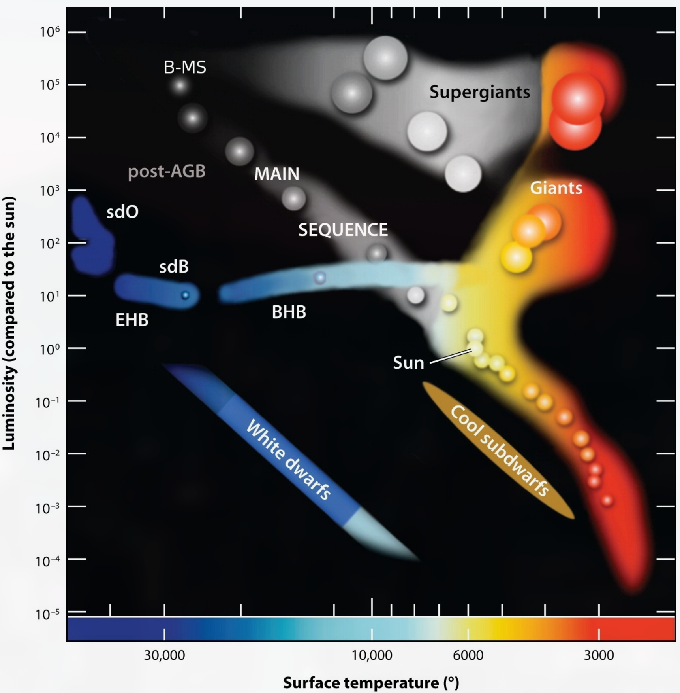
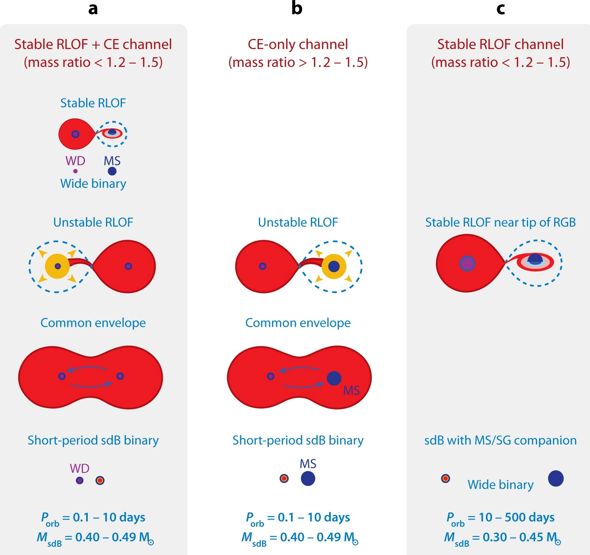
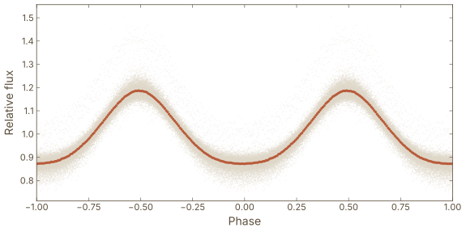
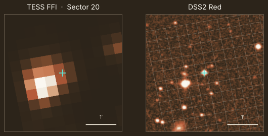

Hot Subdwarf Stars in Close Binaries
- Compact, core-He-burning stars on the extreme horizontal branch
- Spectral types sdB, sdOB & sdO
- Often reside in close binary systems
- Relevant as SNe Ia progenitor candidates
Binary nature is a formation requirement - envelope stripping needs a companion.

Binary Evolution Pathways

(CE ejection · stable RLOF · WD merger)">-
Common-envelope ejection
→ short-period sdB + dM / WD -
Stable RLOF
→ long-period sdB + FGK -
He-WD merger
→ single sdB / sdO
CE channel produces the short-period binaries detectable in photometric surveys.
Lightcurve Signatures
Three examples of photometric effects in short-period hot subdwarf binaries
HW Virginis
Deep eclipses and reflection effect - sdB + dM/BD
Reflection Effect
Irradiated companion hemisphere
Ellipsoidal Modulation
Tidal distortion - sdB + WD
Detection difficulty increases left → right | Amplitude decreases from ~60 % to < 1 %
TESS
✓ Strengths
- Continuous 27-day sectors - excellent phase coverage
- 2-min / 20-s cadence for targeted stars
- High photometric precision for bright targets
✗ Limitations
- 21″ pixels → severe crowding at faint magnitudes
- FFI cadence 200 s for forced photometry
- Bad coverage for subdwarfs near the plane


ZTF & ATLAS
ZTF
✓ Strengths
- Deep - g ≈ 20.5 mag
- High-cadence fields available
✗ Limitations
- Northern sky only (δ > −30°)
- Irregular cadence in most fields
ATLAS
✓ Strengths
- All-sky coverage
- Consistent cadence (~4×/night)
✗ Limitations
- Shallower (c/o bands, ~19 mag)
- Bigger pixel size of 1.86″
Example ZTF LC
assets/images/ztf-lc.txt
Example ATLAS LC
assets/images/atlas-lc.txt
Survey Sky Coverage
Footprints of TESS, ZTF, ATLAS - with the hot subdwarf catalogue overlaid
All-sky Mollweide projection
survey footprints + hot subdwarf catalogue positions
survey footprints + hot subdwarf catalogue positions
assets/images/allsky-coverage.png
BlackGEM for Hot Subdwarf Binaries
✓ Strengths
- 0.56″/px - excellent spatial resolution
- Deep limiting magnitude 21.9 mag @ 1 min in g band
- Fields near the Galactic plane
✗ Limitations
- Small 1.65°×1.65° fields
- Still building up epochs
- Weather & scheduling gaps can disrupt sampling
BlackGEM field coverage map
(southern sky, disk fields)
(southern sky, disk fields)
assets/images/blackgem-coverage.png
Detectability of Lightcurve Effects
Simulated minimum datapoints to detect / identify / fit each effect vs Gmag
Plot: HW Vir detection thresholds per survey
assets/images/detect-hwvir.png
Plot: Reflection effect detection thresholds
assets/images/detect-reflection.png
Plot: Ellipsoidal detection thresholds
assets/images/detect-ellipsoidal.png
HW Vir
Deep eclipses → fewest points needed
Deep eclipses → fewest points needed
Reflection
Moderate - needs good phase coverage
Moderate - needs good phase coverage
Ellipsoidal
Tiny signals - many epochs & small errors required
Tiny signals - many epochs & small errors required
Catalogue Coverage Over Time
Hot subdwarf catalogue: ~66 000 objects - how many have sufficient photometric data?
Coverage: all surveys
(# subdwarfs with N+ datapoints over time)
(# subdwarfs with N+ datapoints over time)
assets/images/coverage-all-surveys.png
TESS · ZTF · ATLAS - years of head start
Coverage: BlackGEM
(cumulative from first light → now)
(cumulative from first light → now)
assets/images/coverage-blackgem.png
BlackGEM - 3 years of science observations
BlackGEM's Niche
- TESS struggles with crowded fields near the Galactic disk - 21″ pixels blend faint subdwarfs with neighbours
- ZTF lacks southern sky coverage below δ ≈ −30°
- BlackGEM's 0.56″/px resolves sources that are blended or missing in other surveys
- Targeted disk fields can provide deep, repeated coverage of exactly the region others miss - if they are actually surveyed long enough
BlackGEM is not built to compete on sky volume - but it could fill the niche where
spatial resolution and southern disk access matter most.
A detection machine for faint, crowded hot subdwarf binaries.
Future Projections
Extrapolated number of hot subdwarfs with detectable LC variations over time
Projection plot
x = time (first light → now → future)
y = cumulative # detectable subdwarfs
separate lines per LC effect · vertical "now" marker
x = time (first light → now → future)
y = cumulative # detectable subdwarfs
separate lines per LC effect · vertical "now" marker
assets/images/future-projection.png
Key result: [Placeholder - fill in once the projection is computed]
Summary & Conclusions
- 1. [Placeholder takeaway]
- 2. [Placeholder takeaway]
- 3. [Placeholder takeaway]
- 4. [Placeholder takeaway]
Thank You!
Time for questions & discussion

Appendix
Supplementary material
Appendix - Placeholder 1
Extra slide content
assets/images/appendix-1.png
Appendix - Placeholder 2
Extra slide content
assets/images/appendix-2.png